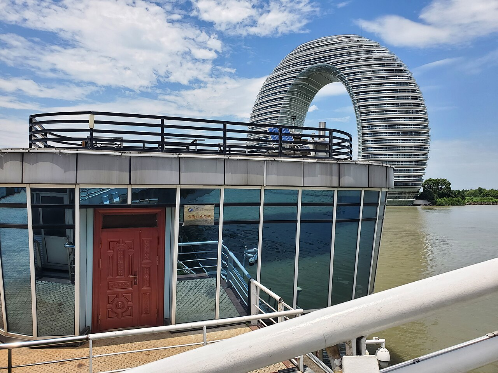

♨️ 苏御温泉（苏州吴江）
方案③温泉 · 距苏州湾亚朵134m
距亚朵134m亲子泡池妈妈放松

实景照片 · 来源 Wikimedia Commons（CC协议）
← 返回主计划
位置与交通
- 位置：苏州市吴江区东太湖度假区，距苏州湾亚朵仅134m
- 步行即达，零通勤满足"玩水/戏水"诉求
价格参考
| 票种 | 预估 | 说明 |
|---|
| 2大1小 | 约250–400元 | 见主计划预算 |
| 儿童(1.2–1.5m) | 约半价 | 女童适用 |
特点与适合谁
- 亲子泡池/戏水，妈妈泡汤放松主场。
- 紧邻酒店，可与欧悦水上乐园组合"白天玩水+傍晚泡汤"。
注意事项
温泉高温，6岁女童需家长全程看护、避免久泡。